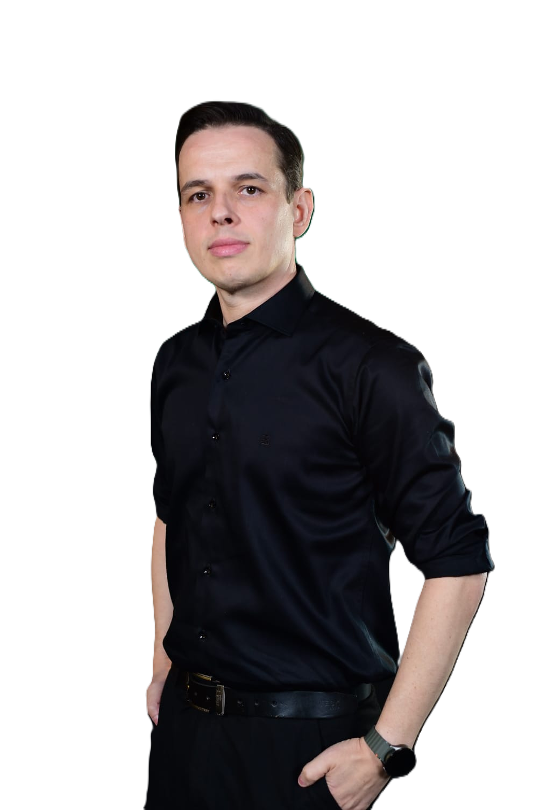

🧠
Ansiedade
Avaliação de sintomas ansiosos, impacto na rotina e definição da conduta clínica adequada.
Avaliação médica individualizada para adultos, com abordagem clínica de sintomas relacionados à ansiedade, depressão, alterações do humor, insônia, estresse e sofrimento emocional.
Atendimento médico em Saúde Mental 100% online, por teleconsulta. Consultas médicas para adultos, realizadas por videoconferência, com avaliação individualizada e agendamento online.
O atendimento é individualizado e considera os sintomas, histórico clínico, medicamentos, exames e fatores de risco de cada paciente.
Avaliação de sintomas ansiosos, impacto na rotina e definição da conduta clínica adequada.
Avaliação de alterações persistentes do humor, perda de interesse e outros sintomas depressivos.
Investigação clínica de insônia e outras queixas relacionadas ao sono e seu impacto na saúde.
Espaço para avaliação médica de sintomas relacionados a períodos de sobrecarga e sofrimento emocional.
Reavaliação de sintomas, medicamentos em uso e resposta ao tratamento quando houver indicação.
A saúde mental é avaliada considerando também condições clínicas, medicamentos e outros fatores relevantes.
A consulta considera a história de vida, sintomas atuais, rotina, sono, medicamentos, condições clínicas e outros fatores que possam estar relacionados ao quadro apresentado.
A teleconsulta pode ser adequada para avaliação e acompanhamento de diversas queixas de saúde mental. A indicação da modalidade online depende da avaliação clínica. Quando houver necessidade de avaliação presencial ou atendimento de urgência, o paciente será orientado.

Médico formado pela PUC Minas, com atuação em atendimento clínico de adultos e telemedicina.
O atendimento em Saúde Mental busca compreender cada paciente de forma individualizada, com avaliação clínica cuidadosa e comunicação clara sobre as possibilidades de tratamento e acompanhamento.
Atendimento médico realizado por videoconferência, com privacidade, praticidade e avaliação individualizada.
Escolha o melhor dia e horário disponíveis.
Acesse a consulta pelo celular ou computador.
Converse sobre sintomas, histórico, medicamentos e exames.
Definição dos próximos passos de acordo com a avaliação.
Reavaliação quando houver indicação clínica.
Consulta médica por telemedicina com valor informado de forma transparente.
Consulta médica individual por videoconferência, com avaliação clínica e definição de conduta de acordo com cada caso.
Agendar consultaSim. A consulta é realizada por videoconferência, quando a modalidade for clinicamente adequada.
Podem ser avaliadas, entre outras, queixas relacionadas à ansiedade, humor, depressão, sono, estresse e sofrimento emocional. A indicação e a conduta dependem da avaliação médica individual.
Sim. Informações sobre exames, medicamentos e histórico clínico são importantes para uma avaliação médica adequada.
Quando houver indicação médica, poderão ser emitidas prescrições de acordo com a legislação e as normas vigentes.
Não necessariamente. Caso surja uma situação de urgência ou emergência durante o acompanhamento, você será orientado a procurar imediatamente um serviço de urgência e emergência.
O atendimento médico é realizado com observância dos deveres éticos e das normas aplicáveis à confidencialidade e ao sigilo profissional.
Informação educativa sobre ansiedade, depressão, sono, Saúde Mental e teleconsulta.
Quando preocupação e medo merecem avaliação.
Ler artigo →Sintomas e sinais de alerta.
Ler artigo →Quando o problema do sono merece investigação.
Ler artigo →Agende sua teleconsulta médica.